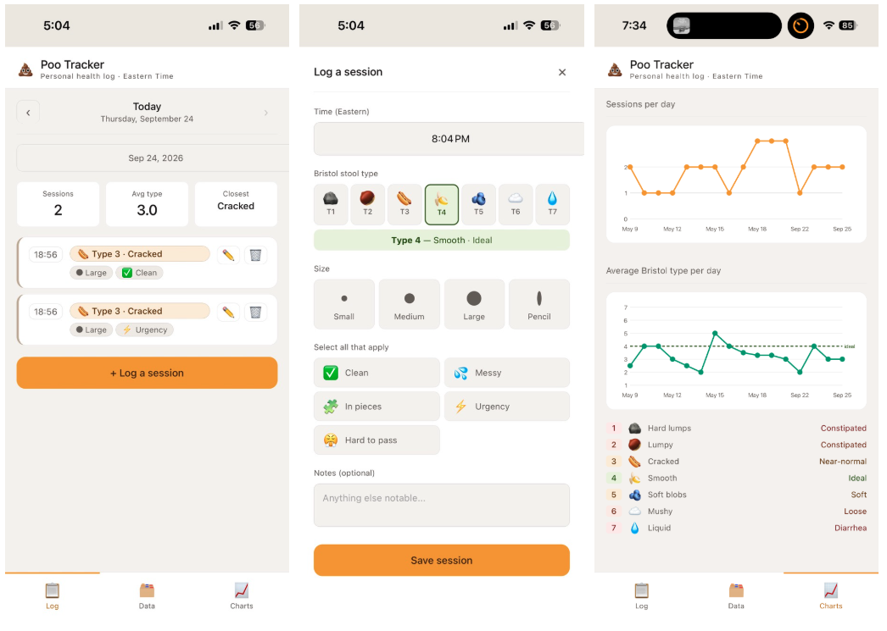

P tracker
Before tackling my broader symptom tracking problem, I built a simple starter app to understand Claude's capabilities and see how it felt to use.

First prototype
Claude made it easy to develop a PWA. That code lives here. Two things worked well:
- It felt quick, easy, and delightful to log (1 page logging, 1-tap entry, pre-filled time stamps)
- The charts were straightforward enough to be valuable, offering a quick view on the state of things
It wasn't perfect. But it felt good enough to move forward. Enter: symptom tracking v1.